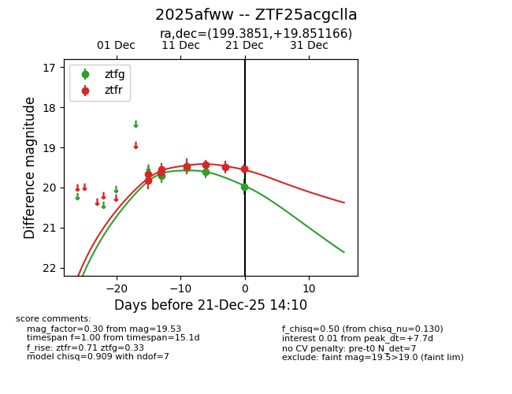
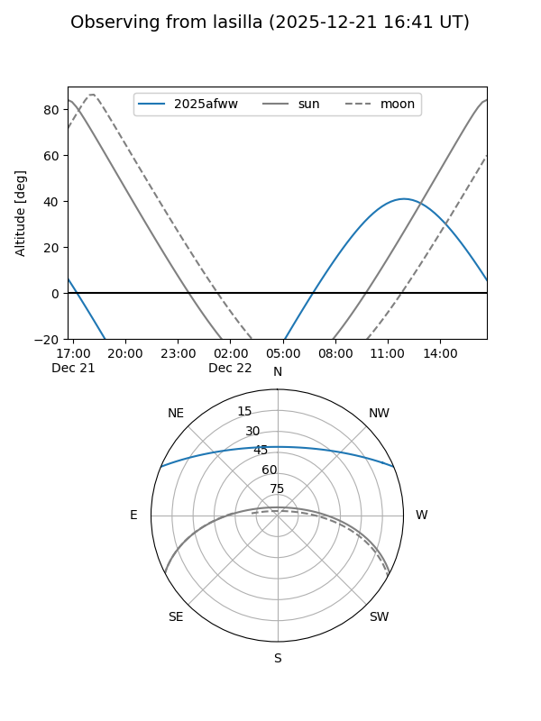

2025afww
Target 2025afww at 2025-12-18 11:17
Aliases and brokers:
FINK: fink-portal.org/ZTF25acgclla
Lasair: lasair-ztf.lsst.ac.uk/objects/ZTF25acgclla
ALeRCE: alerce.online/object/ZTF25acgclla
TNS: wis-tns.org/object/2025afww
YSE: ziggy.ucolick.org/yse/transient_detail/2025afww
alt names
ZTF25acgclla (ztf,fink_ztf)
2025afww (tns,yse)
Coordinates:
equatorial (ra, dec) = 199.3851,+19.85117
equatorial (HMS+DMS) = 13:17:32.43,+19:51:04.20
galactic (l, b) = (343.7205,+80.58229)
Photometry
last ztfg=19.60, ztfr=19.42
3 ztfg, 6 ztfr detections
Lightcurve

Visibility


Additional plots